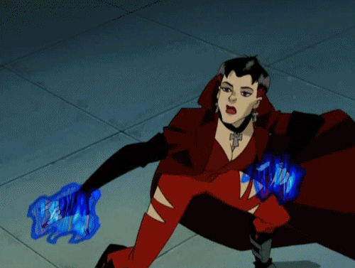
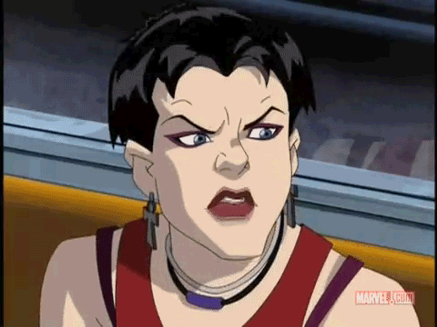
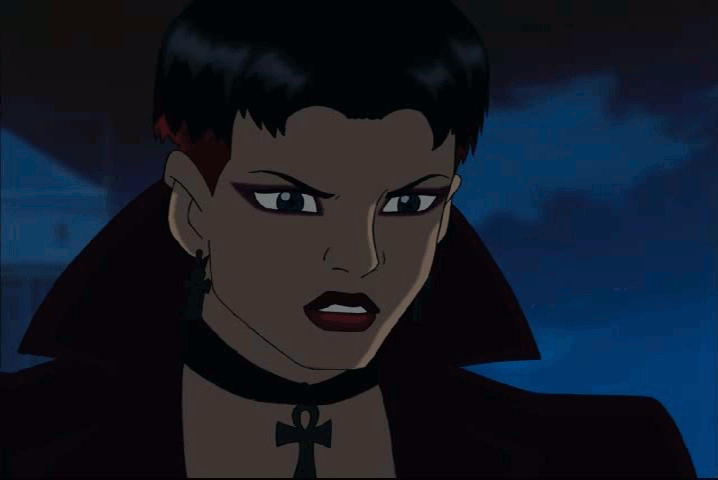
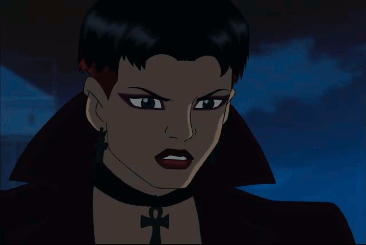
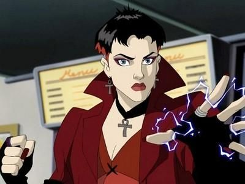
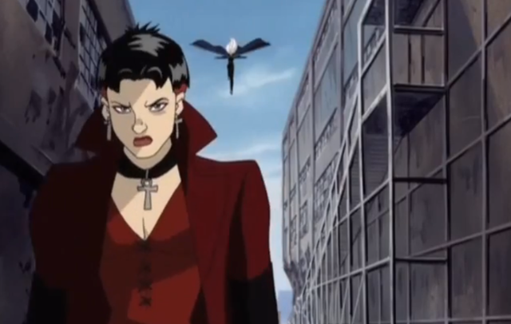

Wanda
Wanda foi libertada da prisão por Mystique , que tentou usá-la em sua própria vingança contra Magneto . Wanda passou grande parte de sua série introdutória procurando por seu pai, eventualmente encontrando e tentando matá-lo.


 

Personalidade
Wanda é uma pessoa angustiada, problemática, independente, instável e vingativa. Ela tem problemas, para dizer o mínimo. Ela não é uma pessoa muito feliz, pois tem muita raiva e hostilidade reprimidas.
Embora graças a Mastermind reescrevendo suas memórias, ela não consegue identificar a fonte disso. Wanda guarda rancores poderosos e devastadores que ela deixa apodrecer em vez de tentar deixar ir. As habilidades sociais de Wanda estão subdesenvolvidas devido aos anos de institucionalização.
Ela está mais acostumada com sua própria empresa e considera a interação social “normal” um desafio. Wanda é um tanto introvertida, pois é quieta e não especialmente extrovertida, mas não é uma pessoa tímida e é muito assertiva e determinada quando está perseguindo um objetivo. Apesar de sua raiva e questões anti-sociais, Wanda demonstrou ser bastante compassiva e simpática para aqueles que ela considera um amigo (ou pelo menos um aliado).
Aparência

Wanda é uma garota caucasiana com olhos azuis e uma figura um tanto magrinha, mas esguia. Enquanto estava no asilo, seu cabelo preto ia até os ombros e geralmente cobria seu rosto, mas ela recentemente o cortou em um penteado bem curto. Ela geralmente usa sombra vermelho-escura, batom e esmalte. Wanda geralmente usa um colete de brocado vermelho que mostra sua barriga, calça preta de couro com um cinto longo vermelho em forma de fita e sapatos grossos vermelhos. Ela complementa com várias pulseiras e braceletes nos pulsos e antebraços, duas gargantilhas, um par de anéis e brincos de cruz. Muito parecido com Rogue, Wanda parece ser bastante gótico.
Em seu uniforme de batalha, Wanda usa um sobretudo vermelho escuro com colarinho sobre um macacão vermelho tipo espartilho que cobre todo o seu corpo, que tem algumas marcas rasgadas nas coxas e joelhos. Ela usa longas luvas pretas sem dedos que cobrem seus antebraços e botas de combate pretas com caneleiras prateadas. Wanda ainda usa seus brincos de cruz, mas com uma gargantilha de cruz combinando. Além disso, sempre que Wanda está com seu uniforme de batalha, a camada inferior de seu cabelo é tingida de vermelho.

Home